Pocketcade: a whole arcade in your pocket
An open-source website of sixteen original browser games. They start in a second on a phone or a desktop, with no downloads, no sign-ups, no ads and no tracking.
- 16 games
- Static site, no server code
- Saves stay on the device
- Original art, synthesized sound
- MIT and CC BY 4.0
This page is a guided tour for someone new to the project. It explains what the pieces are, how a game gets onto the screen, and how to add one. The detailed references live next to this file: architecture.md for how the platform is built, making-games.md for writing a game, design-system.md for the look, and games.md for each game's rules.
Pocketcade is a portal (the website people browse) plus a library of games, each in its own package. The portal never needs to know how a particular game works inside. Every game follows the same small agreement, the contract, so the portal can start, pause, resume, mute, make fullscreen and stop any of them in exactly the same way.
1The idea in one picture
Four layers sit in the browser, and one package of types holds them together.
HostAPI and is the only
one who calls its lifecycle methods. Games are written with the toolkit. Dashed arrows: the host and every game
compile against the same contract in the SDK.- Portal: the website. It lists the games, shows each game's page and draws the player around the game, but never draws inside the game's frame.
- Host: the runtime between the portal and a game. It loads the game's code, mounts it, pauses it when the tab is hidden, keeps the one shared audio context, saves data and catches crashes.
- Game: one package per game, with its own rules, art and sound.
- Toolkit: shared game code, so each game is small. Its adapters do the hard parts of the contract (clean pause and teardown) for every game.
- SDK: the contract itself. It has no code that runs on its own, only types, validation, the storage and score rules, and the tests every game must pass.
2What it is built with
| Tool | Version | Used for |
|---|---|---|
| Next.js and React | 16.4.5, 19.3.1 | The portal, exported as plain static files |
| Phaser | 4.2.1 | The 2D engine behind 15 of the 16 games, loaded only when a game starts |
| TypeScript | 7.0.2 | Every package; Node.js runs the build scripts' TypeScript directly |
| Node.js | 26 | Development, build scripts and CI |
| pnpm | 12.18.0 | The workspace and its exact, pinned dependency versions |
| Turborepo | 2.11.10 | Runs lint, typecheck, test and build across packages in the right order |
| Vite | 8.3.6 | The playground, a test bench that runs one game at a time |
| Vitest | 5.1.0 | Unit tests, and the contract tests in a real Chromium |
| Playwright | 1.65.0 | End-to-end tests of the built site, the leak test, share images, screenshots |
| ESLint and Prettier | 10.14.0, 3.9.10 | Package boundaries, the game sandbox rules, formatting |
| Fredoka and Nunito | 5.3.0 (Fontsource) | The brand fonts, self-hosted from npm |
| Vercel | (service) | Hosting for the static files, with headers from apps/web/vercel.json |
3Repository tour
One repository holds everything. Each folder below is a package in the pnpm workspace.
| Folder | What lives there |
|---|---|
apps/web | The portal: pages, the player component, the catalog, vercel.json, share images and end-to-end tests |
apps/playground | A small page that runs any game on the real host at any frame size; the screenshot script and the leak test |
packages/sdk | The contract: types, validation, storage and score rules, a mock host and the contract test suite |
packages/host | The runtime that mounts a game into a page |
packages/toolkit | Shared game code and the Phaser and DOM adapters |
packages/games/<id> | One folder per game: game.md, media/cover.svg, source and tests |
packages/config | Shared TypeScript, ESLint and Prettier settings |
tools/ | Scripts: the catalog generator, the word-list builder, the post-build step, a local static server, the size-budget check |
docs/ | The references, and this page |
The packages may only depend on each other in one direction. The SDK depends on nothing; the host depends only on the SDK; games depend on the SDK and the toolkit, never on the host or another game; and the portal reaches game code only through files generated from the game folders. ESLint enforces these rules, so a wrong import fails the lint step.
4When someone presses Play
A game page first shows a poster with a Play button; nothing of the game has run yet, though its code may already be downloading in the background once the page is idle. Here is what happens after the click.
If anything goes wrong on the way, the runner switches to a crashed state and the portal shows a crash card with Retry, Copy details and, when the repository is known, a prefilled bug report. If the game's code fails to load because a newer version of the site was just deployed, the player is offered a reload instead. A crash stays inside the player; the rest of the page keeps working.
While a game runs, the host pauses it when the tab is hidden, the window loses focus, the player scrolls it mostly out of view, a dialog opens over it, or the screen is the wrong shape or too small. Audio is suspended while it is paused.
5The contract in brief
A game package exports one object: a description of the game and a function that creates a fresh copy of it.
GameMeta: what the game is
id, the folder name- inputs: keyboard, pointer, touch
- orientation and frame shape
- smallest playable size
- save version and local leaderboards
Game: what the host can ask
mount()into a container, ready to playpause()andresume(), safe to repeatunmount(), leaving nothing behind: no listeners, timers, audio or WebGL contexts
HostAPI: what a game may use
- storage, scores, fullscreen, audio
- signals that a run started or ended
- events: resize, mute, fullscreen change, input change, a new day
- non-fatal error reports
A game may not touch the page outside its container, use the browser's storage directly or make network requests. Linting enforces this, and a contract test suite checks every game in a real browser: it mounts, pauses, resumes, aborts a mount half-way, mounts twice, plays the self-playing attract demo and unmounts, and fails if the game leaves anything behind or writes where it should not.
6Flexible frames
Screens come in every shape, so most games accept a range of frame shapes, for example anything from a tall 9:16 to a wide 16:9. The portal sizes the player to the shape inside that range that fills the most of the screen, wide on a desktop and tall on a phone. A game can also declare one fixed ratio, or ask for the whole frame (Letterhop, the one game built with plain DOM, does this).
A Phaser game keeps a fixed design area where everything playable lives. When the frame is wider or taller than that area, the camera shows a larger view around it, and the game fills the extra space, the bleed, with scenery.
tk.layout.view). The largest possible overhang on each side is
tk.layout.bleed.The toolkit picks the canvas resolution for the largest size the game can reach, fullscreen included, and draws its textures once at that scale, so art stays sharp when the player goes fullscreen. In fullscreen the frame is letterboxed by the same rule. The full guidance is in making-games.md.
7Where data is saved
There are no accounts and no server. Everything is kept in the browser's localStorage on the player's
device, under keys that start with pocketcade:v1:. Games never touch it directly; they go through the
host, which enforces the size limits and keeps each game's data separate.
| Key | Holds |
|---|---|
pocketcade:v1:g:<game>:<key> | A game's saves and options, at most 64 KiB per key and 256 KiB per game |
pocketcade:v1:lb:<game>:<board> | A local top-10 leaderboard, with initials and dates |
pocketcade:v1:p:settings | Whether sound is muted, and the last initials entered |
pocketcade:v1:p:history | How often and when each game was played, for "Continue playing" |
When storage is blocked, for example in some private windows, the host keeps data in memory for the visit and the player is told progress will not be saved. Clearing the site's data in the browser removes everything.
8The 16 games
In the portal's editorial order. "Frame" is the range of shapes each game accepts, as width to height.
-
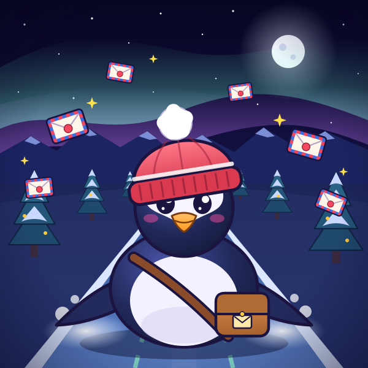
Pebble Post
A penguin courier belly-slides down an ice canyon, hopping drifts and collecting letters.
-
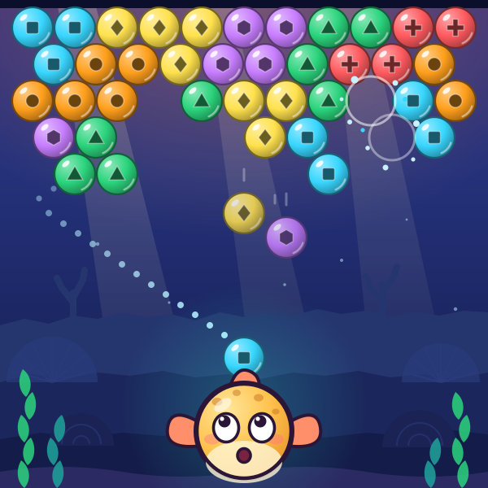
Pop Reef
A pufferfish puffs bubbles at the ceiling; match three to pop them before it sinks.
-
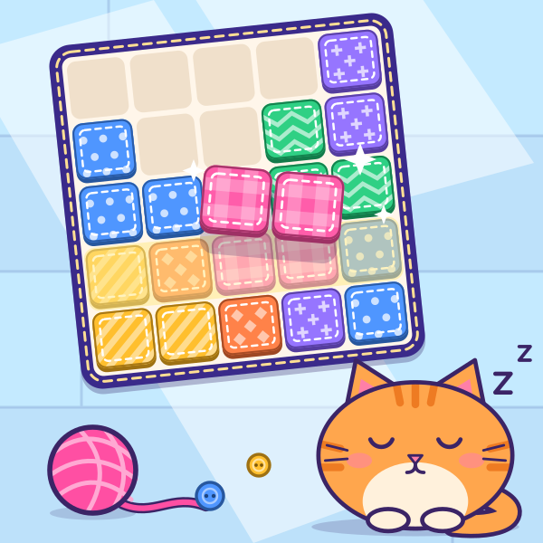
Snugfit
Fit fabric patches onto a quilt and stitch full rows and columns to clear them.
-
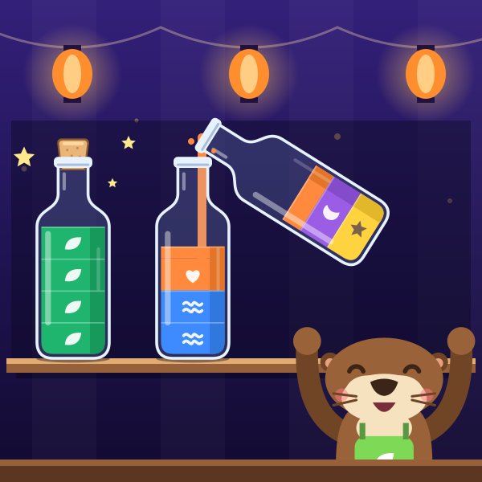
Hue Brew
Pour layered drinks from bottle to bottle until each one holds a single flavour.
-
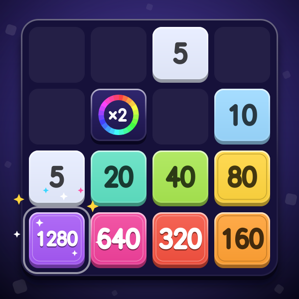
Sumslide
Slide candy number tiles on a 4×4 tray; equal numbers merge into their sum.
-
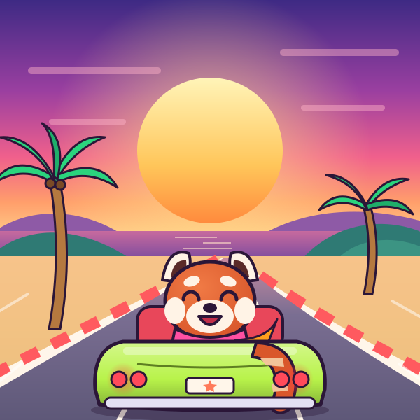
Sunset Sprint
A red panda races a coast road at sunset, weaving through traffic to beat the clock.
-
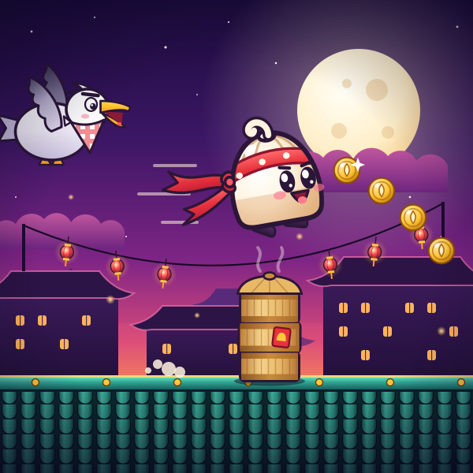
Bao Bolt
A steamed bun dashes over night-market rooftops while a greedy gull gives chase.
-
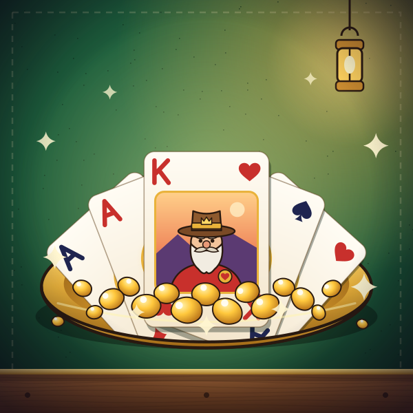
Sourdough Solitaire
Klondike patience at a gold-rush camp, with Draw 1 or Draw 3 and unlimited undo.
-
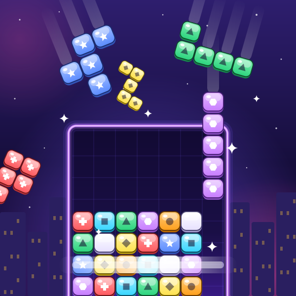
Pentafall
Five-block jelly pieces drop into a neon well; fill rows and land a Full Five.
-
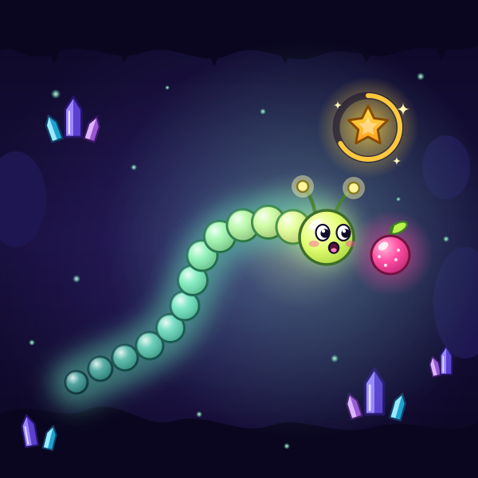
Glowworm
Gobble glowberries in a crystal cave, grow longer, and never bite your own tail.
-
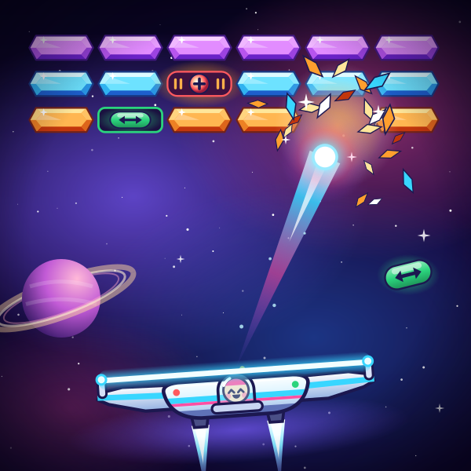
Comet Bounce
Bounce a blazing comet off a hover-ship through 20 crystal walls in a neon nebula.
-
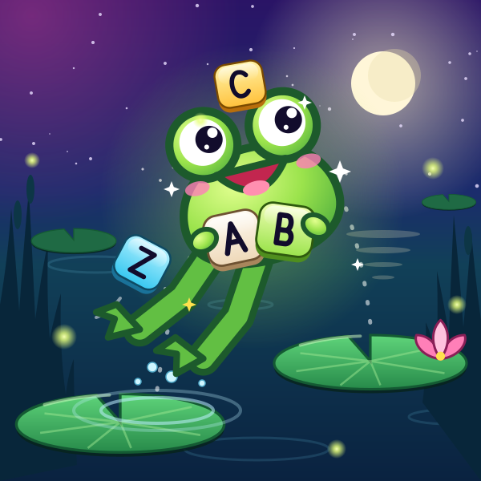
Letterhop
Change one letter at a time to climb from the start word to the goal. The one DOM game.
-
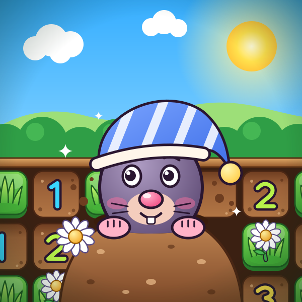
Molehills
Read the numbers in the soil and find every sleeping mole without waking one.
-
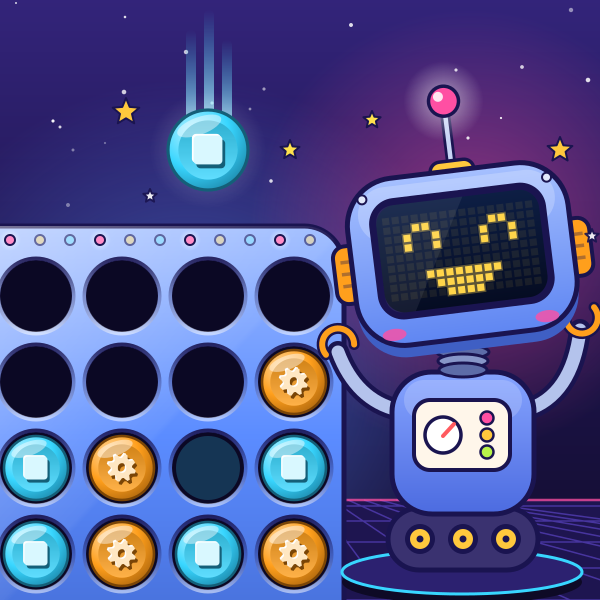
Rowbot
Line up four against a cheeky arcade robot that gets sharper every round you win.
-
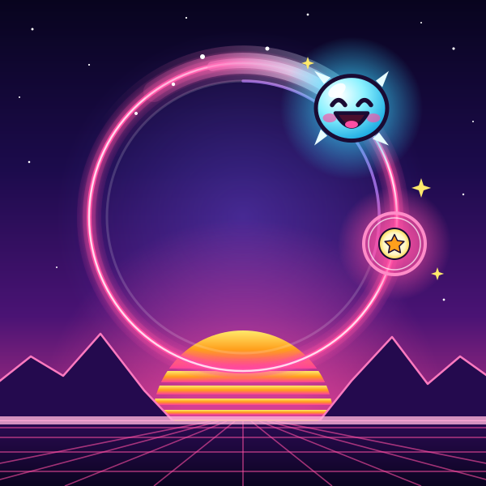
Starlap
Tap the moment a neon spark crosses each star; one miss ends the run.
-
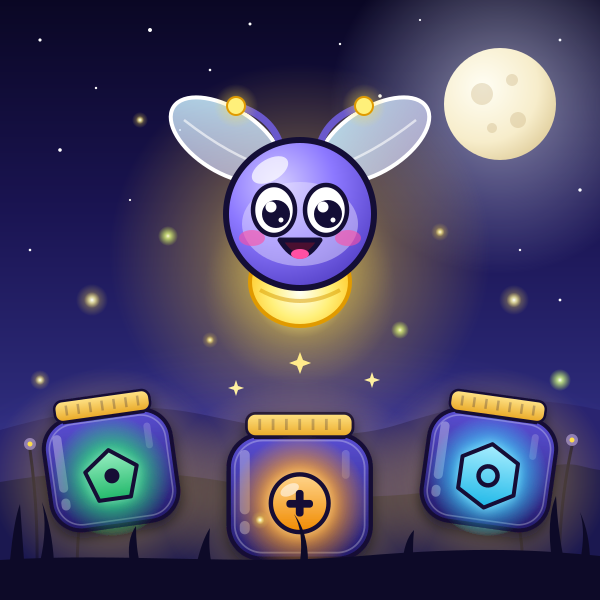
Firefly Flip
Match glowing firefly jars, then sing back a lantern song that grows each round.
9Adding a game
A new game is a new folder. The quickest start is to copy a game of a similar kind.
- Create
packages/games/<id>/withsrc/meta.ts(itsidis the folder name),src/index.ts,game.md, a squaremedia/cover.svgof at most 40 KB, unit tests andtest/contract.test.ts. - Add
"@pocketcade/game-<id>": "workspace:*"to the dependencies ofapps/webandapps/playground, then runpnpm install. - Add the id to
gameOrderinapps/web/src/games/catalog.ts. - Run
pnpm ogand commit the new share image inapps/web/public/og/.
Everything else is automatic. The game's game.md is the single source of its listing, and a generator
turns the game folders into the files the portal reads:
game.md, its cover or its share image fails the lint step.To see a game while working on it, the playground runs it on the real host at any frame size
(pnpm --filter @pocketcade/playground dev), and node apps/playground/scripts/shot.ts <id>
saves screenshots of it. The rules for art, sound, frames and feel are in making-games.md.
10Quality checks
Continuous integration runs on every pull request. Locally, pnpm verify runs the first five rows
below, pnpm budgets the size check and pnpm e2e the browser tests.
| Check | What it proves |
|---|---|
| Formatting and generated data | Prettier is clean; every game folder registers; Letterhop's word data matches its sources |
| ESLint | Packages import only what they may; game code stays inside its sandbox |
| Typecheck | Everything compiles with TypeScript 7 |
| Unit tests | Each game's rules, the contract rules, the host, the toolkit, the catalog, SEO and the tools |
| Contract tests | Every game mounts, pauses, resumes and unmounts cleanly in Chromium, and attract mode writes nothing |
| Size budgets | Home page JavaScript at most 200 KiB gzipped and free of Phaser; one Phaser chunk of at most 365 KiB; each game at most 150 KiB |
| End-to-end tests | On the built site, on desktop Chrome and a phone profile: security headers, routing, SEO files, no request to another site, every game starts from its page, and the player's pause, fullscreen, mute, leaderboard and crash flows |
| Leak test | Every game is mounted and unmounted three times and leaves no listeners, timers, animation frames, WebGL contexts, playing audio or DOM behind |
11Privacy and security
Pocketcade is built to collect nothing.
- No accounts, analytics, ads, trackers or cookies. Game data stays on the device, as described above.
- Nothing from other sites. Fonts are self-hosted and there are no CDNs. The Content Security
Policy in
apps/web/vercel.jsonallows scripts, styles, images, fonts and connections only from the site itself, and an end-to-end test fails if browsing and playing request anything from another origin. - Locked-down headers. A Permissions-Policy turns off the camera, microphone, geolocation,
payment, USB and similar APIs; the site cannot be framed by others (
frame-ancestors 'none',X-Frame-Options: DENY); it also sendsCross-Origin-Opener-Policy: same-origin,Referrer-Policy: same-originandX-Content-Type-Options: nosniff. - Sandboxed games. Game code may not make network requests, read browser storage directly or reach outside its container; linting enforces it.
- No secrets. The site is static and has no server code. Every environment variable is optional, public and read only at build time.
- Hosting. The site is served by Vercel, which may process request data such as IP addresses and browser details in its server logs, as the site's privacy page explains.
- Bug reports are opt-in. After a crash, "Report a bug" opens a prefilled GitHub issue with the game, its version, the build, the error and browser details; nothing is sent unless the player submits it.
12Licensing
Code
MIT License (LICENSE).
Art, audio and text
Original work, licensed CC BY 4.0 (LICENSE-ASSETS), credit "Pocketcade contributors". Every sprite and cover is drawn in code or hand-written SVG, and every sound is synthesized.
Third-party material
The fonts and Letterhop's word lists keep their own licences and are listed in ASSETS.md. The site's Licenses page is built from that file.